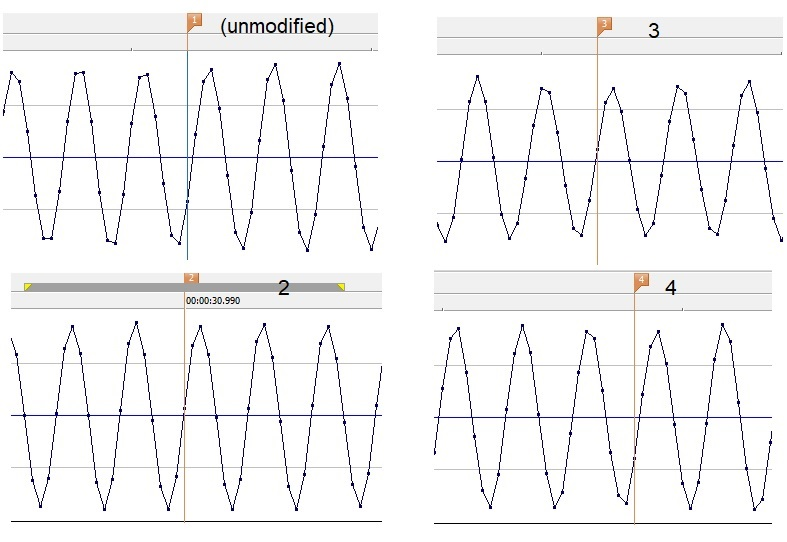

WoofWhistle.com
When your dog (or cat) is lost, you want to
maximize your chances of finding them.
A dog whistle
might help, but even better if it's a unique sound they might
recognize.
That's why we're offering a custom-tuned whistle. Each is a standard high-
pitched dog whistle, but modified to sound unique, in a way that your animal will
hopefully recognize if within range of your search.
Each whistle is unique in terms of its modification and sound. The more you train
your animal with your whistle, the more likely it is to recognize the sound when you search.
Simply reinforce the pleasant experiences of coming for food or hugs or going for a walk or
run, with your distinct "whistle." A certain pattern is even better: two short,
two long, one long, three short, three long, etc. Your pet will associate and remember!
The chart below shows the sound of an unmodified whistle, and three modified
whistles. The differences may appear minor, but hopefully your animal will
recognize the difference, and the sound when it comes time to search.
$9.95 for one whistle, shipped via USPS in the US.


Rosie